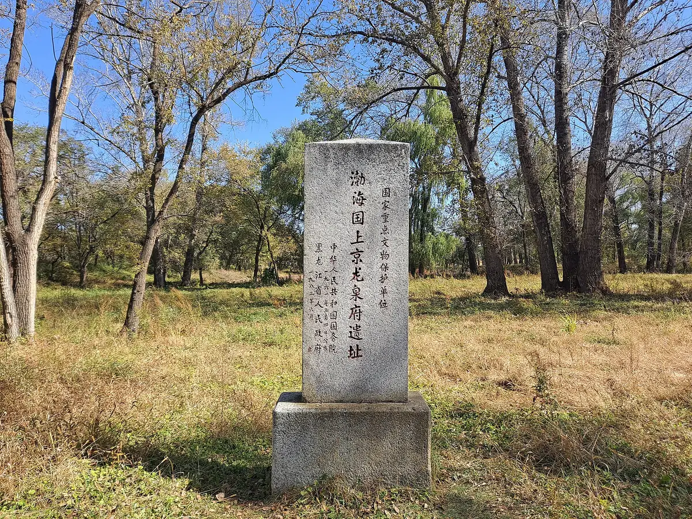

档案
- 寻访编号
- No.001
- 名录项目
- 响水水稻种植技艺黑龙江省第二批省级非物质文化遗产代表性项目名录（2009 年），传统技艺
- 地区
- 黑龙江 宁安
项目
响水水稻种植技艺
- 1
2009 年 6 月，黑龙江省人民政府公布第二批省级非物质文化遗产名录，“响水水稻种植技艺”列入传统技艺类，申报地区为牡丹江市。〔1〕
- 2
2007 年，“响水大米”经国家质检总局批准为地理标志保护产品（2007 年第 15 号公告），保护范围为宁安市渤海镇、东京城镇、江南乡、卧龙乡、兰岗镇 5 个乡镇。〔2〕〔3〕
- 3
地方标准记载的产地条件：年日照 2400 小时以上，年活动积温 2300℃ 以上，年平均气温 3.8℃，年降水 550–600 毫米；灌溉用水为牡丹江上游的镜泊湖水及其他洁净无污染的水。〔3〕
- 4
2015 年，“黑龙江宁安响水稻作文化系统”被农业部认定为第三批中国重要农业文化遗产。这是农业文化遗产名录，不是非物质文化遗产名录。〔4〕
- 5
《新唐书·渤海传》在渤海国“俗所贵者”中记有“卢城之稻”。卢城所指地点学界有不同看法，“卢城之稻即响水大米”的说法尚无定论。〔5〕〔6〕
- 6
相传响水大米曾为历代贡米，目前未见原始史料，属传说。
- 7
农业文化遗产资料把响水稻作概括为火、石、土、水、稻共生的系统；关于古代水利遗址及其年代，仍需以考古与档案材料逐项核验。〔4〕〔7〕



来源
- 1黑龙江省人民政府《关于公布第二批省级非物质文化遗产名录和第一批省级非物质文化遗产扩展项目名录的通知》，黑政发〔2009〕49 号，2009-06-13。 www.hlj.gov.cn
- 2国家质量监督检验检疫总局《关于批准对响水大米实施地理标志产品保护的公告》，2007 年第 15 号，2007-01-18。 cpgi.org.cn
- 3牡丹江市市场监督管理局《地理标志产品 响水大米》，牡丹江市地方标准 DB2310/T 114—2023，2023-10-23。 dbba.sacinfo.org.cn
- 4农业部《黑龙江宁安响水稻作文化系统》，第三批中国重要农业文化遗产，2015-09-28。 www.moa.gov.cn
- 5《新唐书》卷二百一十九，渤海传。
- 6光明日报《结水为璧：一粒大米中的东北稻作简史》，任林举，第 13 版，2015-11-13。 epaper.gmw.cn
- 7黑龙江省农业农村厅《火山岩上飘出千年稻香》，转载自央视一套；用于了解当地对稻作系统与水利线索的介绍，古代细节仍待原始材料核验，2026-11-13。 nynct.hlj.gov.cn
农事
一年的时间表
1春大中棚钵体旱育苗。
25 月中下旬日平均气温稳定通过 13℃ 后插秧，一般在 5 月 15 日至 25 日。
3夏浅水灌溉。
4秋稻谷九成熟时收获、晾晒。
5加工单品种收获、单独脱粒、单独加工。
依据：响水大米地理标志产品技术要求〔2〕